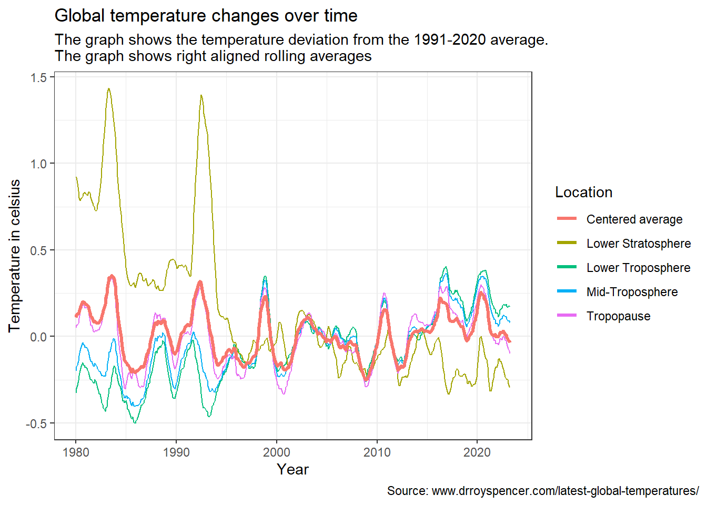

#above this line i specify that i do not want quarto to output the message and the warning
rm(list=ls()) #emptying enviroment
library(tidyverse) #We load in packages
library(lubridate)
library(zoo)
lower <- read_table("http://vortex.nsstc.uah.edu/data/msu/v6.0/tlt/uahncdc_lt_6.0.txt") #We collect our data and save it into datasets
mid <- read_table("http://vortex.nsstc.uah.edu/data/msu/v6.0/tmt/uahncdc_mt_6.0.txt")
tropopause <- read_table("http://vortex.nsstc.uah.edu/data/msu/v6.0/ttp/uahncdc_tp_6.0.txt")
stratosphere <- read_table("http://vortex.nsstc.uah.edu/data/msu/v6.0/tls/uahncdc_ls_6.0.txt")Sok-1005_Assignment_1
Assignment 1 Reading static webpages.
We start by gathering the data we need and getting all our packages
The data is: Lower-Troposphere
Mid-Troposphere
Tropopause
Lower-Stratosphere
Now that we have gotten our data and our packages, i start with removing the last rows in the dataset that contains comments that we don’t need.
Here I use code to dynamically remove the comments even if new data is added. The code is gathered from the link provided below. It is at line 43.
Source of the code used for dynamic code
lower <- lower[1:which(lower$Year %in% "Year")-1, ]
mid <- mid[1:which(mid$Year %in% "Year")-1, ]
tropopause <- tropopause[1:which(tropopause$Year %in% "Year")-1, ]
stratosphere <- stratosphere[1:which(stratosphere$Year %in% "Year")-1, ] #We remove all rows below the second "Year" in the table.We are told to also only use data in the Globe column so I will now select it out of each dataset then combine the datasets into one.
lower <- lower %>%
mutate(Date = ym(paste(Year, Mo))) %>% #Creating a Date variable
select(Date , Year, Mo, Globe) %>% #selecting and arranging the data we want
rename(lower_globe = Globe) #At the end we rename our variables
mid <- mid %>%
mutate(Date = ym(paste(Year, Mo))) %>%
select(Date ,Year, Mo, Globe) %>%
rename(mid_globe = Globe)
stratosphere <- stratosphere %>%
mutate(Date = ym(paste(Year, Mo))) %>%
select(Date, Year, Mo, Globe) %>%
rename(stratosphere_globe = Globe)
tropopause <- tropopause %>%
mutate(Date = ym(paste(Year, Mo))) %>%
select(Date, Year, Mo, Globe) %>%
rename(tropopause_globe = Globe)We now combine them into one dataset we can work with and we convert strings to numeric.
We also create new variables for our averages per year
df <- lower %>%
cbind(mid_globe = mid$mid_globe) %>% #Cbind is binding the columns from the other dataset into this dataset we work with
cbind(stratosphere_globe = stratosphere$stratosphere_globe) %>%
cbind(tropopause_globe = tropopause$tropopause_globe) %>%
mutate_if(is.character, ~as.numeric(.)) #finally we convert characters to numericNow that we have made our datasets, its time to start creating rolling averages
rolling <- df %>%
mutate(rolling_lower = rollmean(lower_globe, 12, fill=NA, align="right")) %>% #I creating a new variable for the rolling average.
mutate(rolling_mid = rollmean(mid_globe, 12, fill=NA, align="right")) %>%
mutate(rolling_strato = rollmean(stratosphere_globe, 12, fill=NA, align="right")) %>%
mutate(rolling_tropo = rollmean(tropopause_globe, 12, fill=NA, align="right")) rolling <- rolling %>%
mutate(average = (rolling_lower + rolling_mid + rolling_strato + rolling_tropo)/4) #Here i create a new variable for the average by combining all 4 datasets and dividing by 4Now that we have our dataset with our rolling averages and our average of the rolling averages its time to start plotting.
rolling %>%
filter(Year >= 1980) %>% #filtering for years from and including 1980
ggplot(aes(x=Date))+ #we set our x axis to date
geom_line(aes(y=rolling_lower, color="Lower Troposphere"))+ #we set lines for all the different variables
geom_line(aes(y=rolling_mid, color="Mid-Troposphere"))+
geom_line(aes(y=rolling_strato, color="Lower Stratosphere"))+
geom_line(aes(y=rolling_tropo, color="Tropopause")) +
geom_line(aes(y=average, color="Centered average"), size=1.2)+
labs(title="Global temperature changes over time",#Setting title
color="Location", #Changing legend name to location
y="Temperature in celsius", #Setting Y axis name
x= "Year", #Setting X axis name
subtitle="The graph shows the temperature deviation from the 1991-2020 average.
The graph shows right aligned rolling averages", #Setting subtitle
caption="Source: www.drroyspencer.com/latest-global-temperatures/")+ #Setting caption
theme_bw() + #we set the theme to black and white instead of default
theme(plot.caption.position = "plot",
plot.caption = element_text(hjust = 1))#Setting caption location